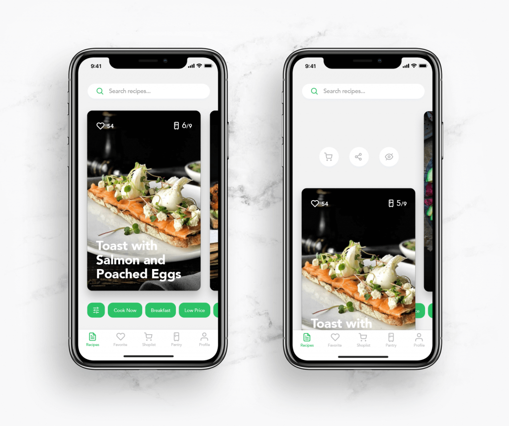
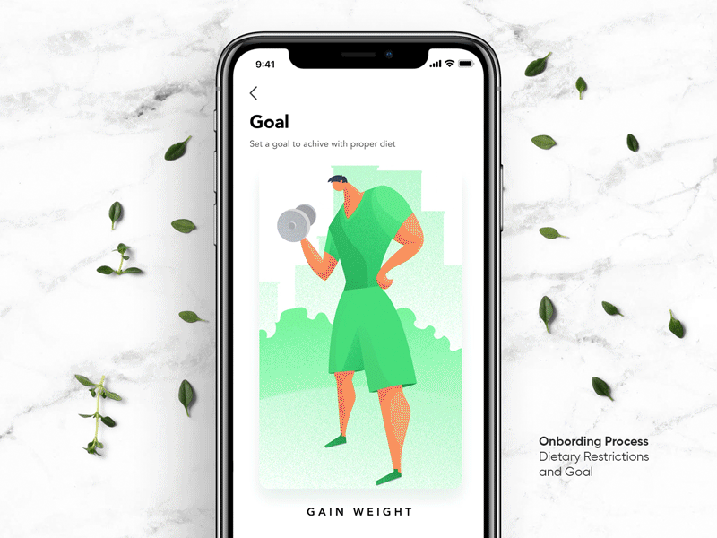

Perfect Recipes App. UX Design for Cooking and Shopping
The UX design case study on the mobile application Perfect Recipes that combines the functionality for cooking and buying what's needed for users' meals. Check user experience design solutions and animated interactions.
Among various types of mobile apps, the ones devoted to food present a very popular category. Recipes and cooking tips, restaurant and food delivery apps, calorie trackers and food diaries more and more applications now help people to keep on with all the faces of eating, which means UX designers work on a variety of interfaces of that kind. Today, we are sharing the case study on one of them, the mobile application called Perfect Recipes that combines the functionality for cooking and buying what is necessary for users’ meals. The designer assigned to the projects was Vladyslav Taran. Let is dive into the creative process.
Idea
The creative team wanted to step aside from the traditional recipe app where users just save the directory of the favorite meals, taken from the app database, or add their own recipes. We had a goal to create a bit more universal food app for users who love cooking. It includes the recipe database which is constantly updated. Also, the application has a supplies manager. To make UX more extended, it allowed users to find the recipes by the supplies they currently had at home or create a shopping list to buy ingredients that were missing.
Analysis
The app design included the comprehensive and diverse functionality which had to be presented to users in a simple and clear way. The designers had to analyze and prioritize all the points, as there was a high risk of overloading the screen. By research and testing, the user scenarios were created to determine which information about the meal in the recipe is found the most important.
User Interface Design
As the recipe app is aimed at daily basic operations and quite a diverse target audience, the user interface has to be super easy and accessible for users with different levels of tech-literacy and all types of mobile devices. The application layout is structured around intuitive navigation, high readability, light background, and eye-catching visuals. The light and airy background sets the effective space for a variety of photos and graphics that may come with the recipes. Clear and solid typography based on san-serif fonts makes the information scannable and legible on the screens of different sizes. Color contrast is used for amplifying quick navigation: bright color accents attract users’ attention to interactive zones and active states of the layout elements. The search field is easily found on the top of the screen: its functionality is clarified for users with both text prompt and search icon.
- calorific value
- type of cuisine
- cooking time
- Prototype of meal
Photography is a good way to impress users with realistic and clear visuals as well as set the needed associations. With rapidly developing photo stock websites, designers have more and more opportunities to find good images; still, for many projects, especially e-commerce ones, the creative teams shoot the original content totally corresponding to the goals of the product. It is especially noticeable in the spheres close to everyday life: fashion, toys, food, drinks, etc. That was the direction for the Perfect Recipe app as well.